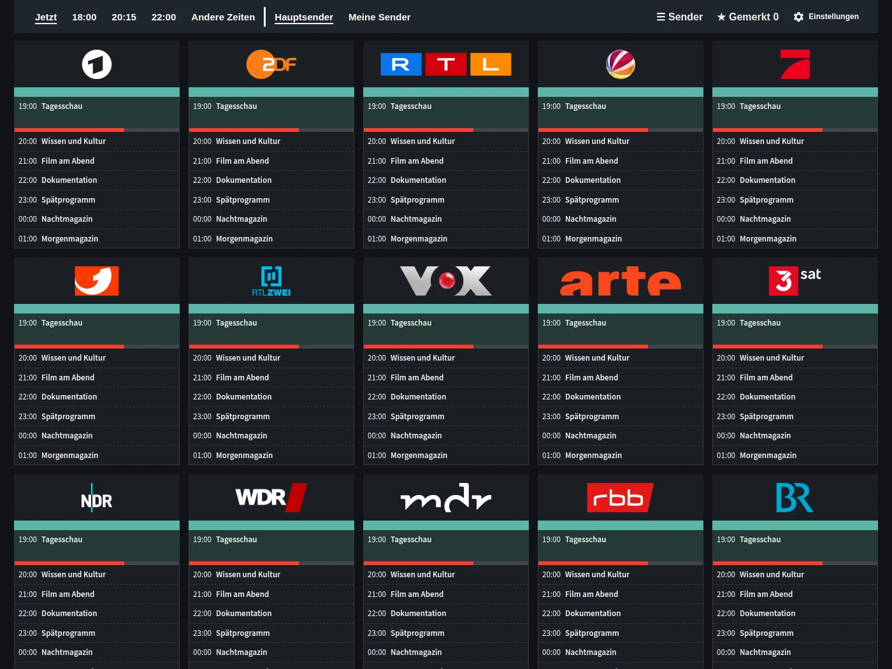
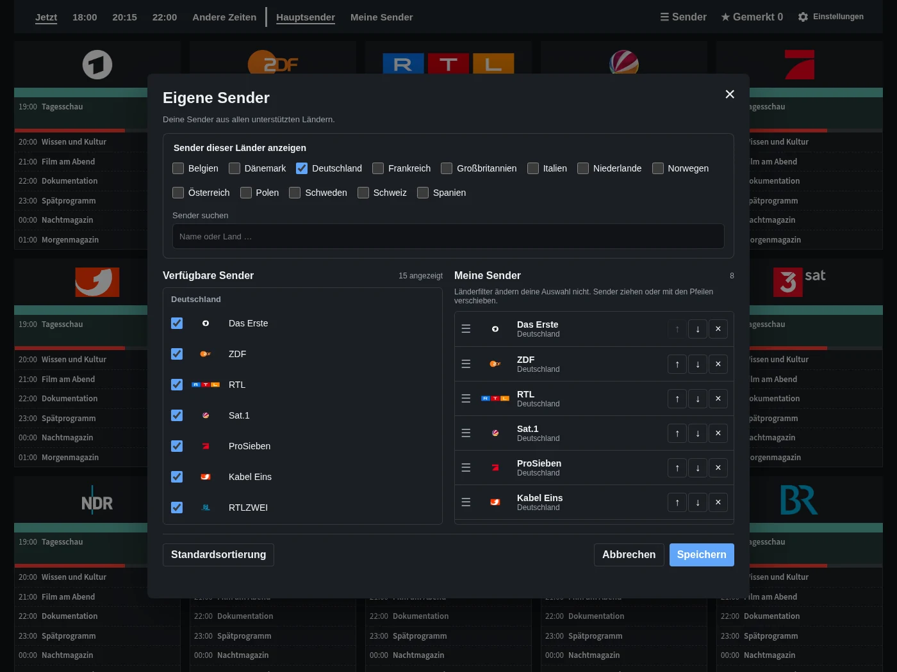
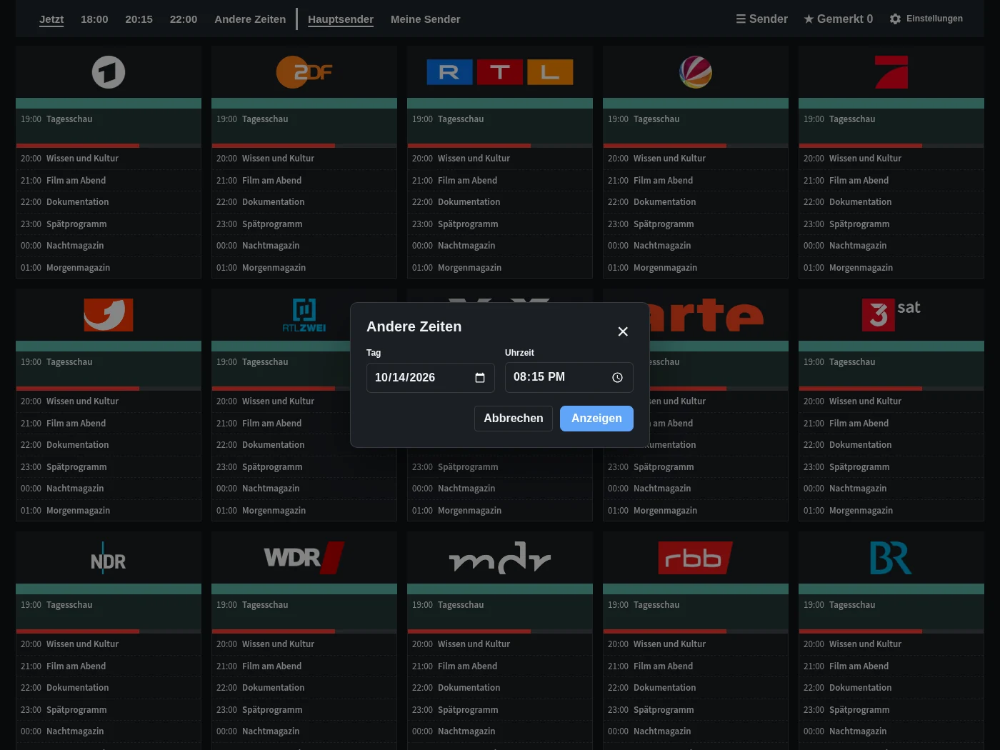
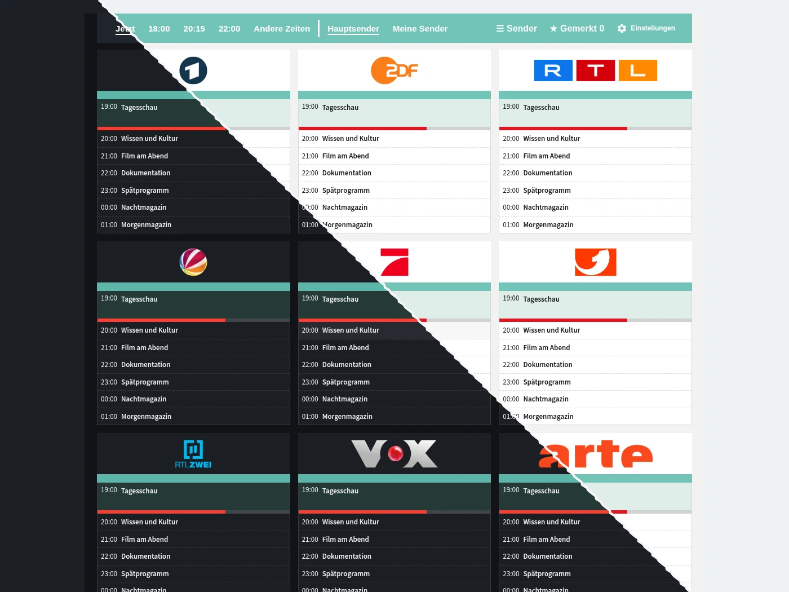

Programmübersicht
Sender, Zeiten und Sendungen auf einen Blick. Direkt zu jetzt, 18:00, 20:15 oder 22:00 springen.
Entdecke die Programmübersicht, persönliche Senderlisten, Zeitauswahl und die optionale Dashboard-Karte.

Sender, Zeiten und Sendungen auf einen Blick. Direkt zu jetzt, 18:00, 20:15 oder 22:00 springen.

Wähle Favoriten aus den unterstützten Ländern und bringe sie in deine gewünschte Reihenfolge.

Wähle ein anderes Datum und eine Uhrzeit, ohne die Übersicht zu verlassen.

Füge TV Guide zu deinem Dashboard hinzu. Die vollständige Übersicht ist auch direkt in der Seitenleiste verfügbar. Das Bild zeigt die Karte im Hell- und Dunkelmodus.
Beispielprogramme. Sendungstitel bleiben in ihrer Originalsprache.
Kostenlos und direkt in Home Assistant.
In HACS öffnen